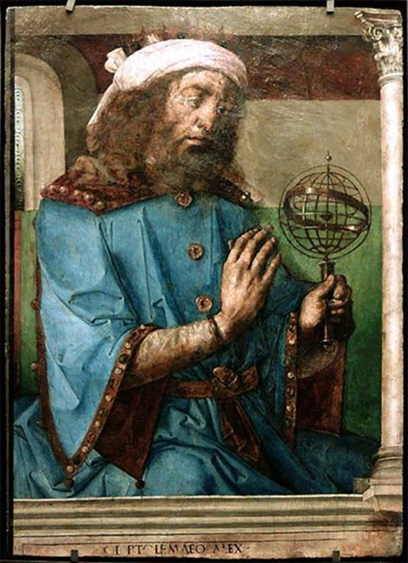

Welcome to the Mathematical World!
Claudius Ptolemy
Mathematical Astronomer and Geometer
Claudius Ptolemy (c. 100–c. 170 CE) was a Greco-Roman mathematician, astronomer, and geographer whose work shaped both theoretical and applied mathematics for over a millennium. He is best known for the Almagest, a comprehensive treatise on mathematical astronomy that systematized the geocentric model of the cosmos and provided precise methods for predicting planetary positions.
In the Almagest, Ptolemy employed rigorous geometric models, including epicycles, deferents, and eccentric circles, to describe planetary motion. Using trigonometry extensively, he provided tables of chords—an early form of a sine function—to facilitate calculations: \[ \text{chord}(\theta) = 2R \sin\left(\frac{\theta}{2}\right) \] where \(R\) is the radius of the circle and \(\theta\) the central angle. These chord tables were essential for both astronomical computation and navigation.
Ptolemy also made significant contributions to geography through his work Geographia, where he applied mathematical principles to map the known world using a system of latitude and longitude. His methodology involved spherical trigonometry to calculate distances and angles on the Earth's surface, reflecting an early integration of geometry and geodesy.
Beyond astronomy and geography, Ptolemy contributed to optics and harmonics, exploring the mathematical principles of reflection, refraction, and musical scales. His approach combined observation, measurement, and geometric reasoning, demonstrating how mathematics could model natural phenomena accurately.
Ptolemy’s influence persisted through the Middle Ages in both the Islamic world and Europe, with Latin and Arabic translations preserving his methods. His blending of theory and practical computation illustrates the power of mathematics as both a predictive and explanatory tool, marking him as one of the most enduring figures of ancient mathematics.